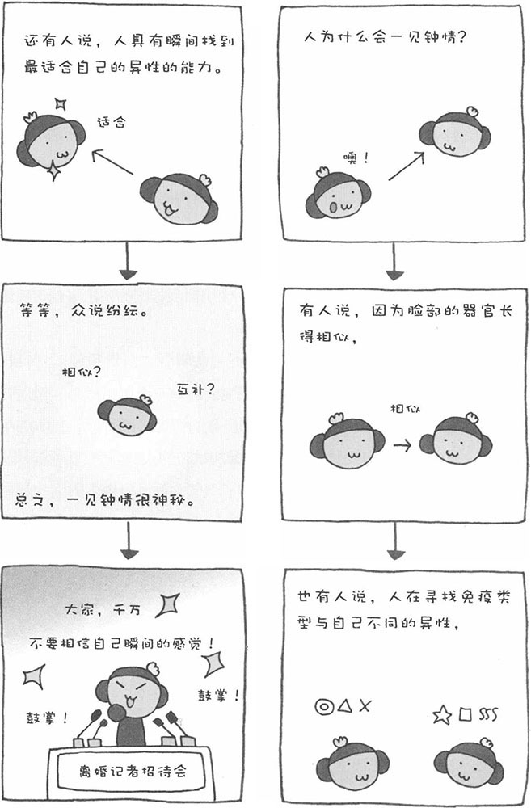

世上恐怕没有比"一见钟情"更美的词了。看一眼，就爱上了对方，简直太美、太浪漫了。如果双方彼此一见钟情的话，我想这绝不能用"偶然"来形容，用"神奇"才更贴切。
实际上，到目前为止，学者们还没有完全揭开"一见钟情"的秘密。一见钟情存在较大的个人差异，有人经常一见钟情，而有人从未一见钟情过。此外，还有的人一生就只一见钟情过一次，结果就和对方结婚并厮守到老。这样的例子在现实生活中还很常见。那么，人到底为什么会一见钟情呢？关于这个问题，在目前的心理学界还是众说纷纭。
从认知心理学的角度来看，如果对方的眼睛、鼻子、嘴巴等器官和自己的相似，我们就会对对方产生亲近感，这种亲近感是发展爱情的基础。还有一种说法认为，有人会对和自己免疫类型完全不同的人产生好感，他们能从对方身上感受到一种"传达物质"，这种物质也能促进爱情的发展。的确，人类想寻找自身所不具备的免疫类型，这从生物学的角度也能解释。非常有趣的是，前一种说法认为，人会对与自己相似的异性一见钟情；而后一种说法认为，人会对与自己不同的异性一见钟情。
最近，又有一种新的说法。认为人的大脑具有一种在瞬间找到结论的"适应性无意识"功能。这种能力与直觉不同，它是人类所具有的一种瞬间判断能力。也就是说，任何人都能在一瞬间看清事物的本质或者找出问题的结论。有些人一生只有一次一见钟情的经历，就能和一见钟情的对象厮守终生。这让我们相信，他们就是在一瞬间找到了这辈子最适合自己的人。因而，一见钟情所产生的爱情并不是暂时的感情，也许这才是爱情的本质。
